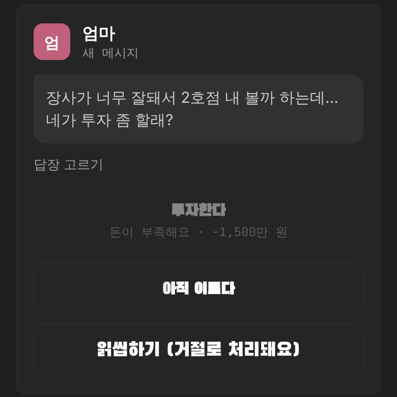
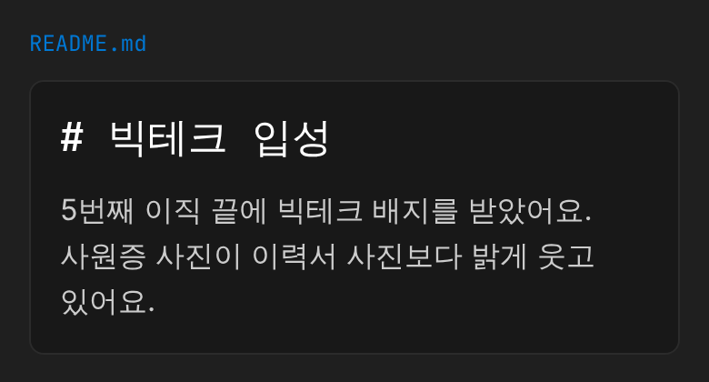

공략집 › 칭호
칭호
칭호 11개 여는 법과 칭호 엔딩 42개의 정확한 갈림길, 주차, 확률, 같이 노리기 좋은 조합과 서로 막는 조합까지
- 🏷️ 칭호는 엔딩을 보면 열리고, 커리어를 시작하기 전에 홈 탭 「칭호」 칸에서 1개 골라 끼워요. 끼우면 그 칭호 전용 이야기가 메신저로 와요.
- 📬 칭호 이야기는 무작위가 아니라 정해진 주차에 정해진 순서로 와요. 그래서 이 글의 표대로 답하면 거의 원하는 엔딩으로 갈 수 있어요.
- ⏱️ 이직의 달인 · 코딩 강사 · 인디 게임 개발자 · 치킨집 개발자는 20~34주에 끝나는 빠른 칭호, 나머지는 52~64주에 끝나요. 일찍 끝나면 코인 · CP는 0이지만 처음 보는 칭호 엔딩마다 에픽 카드팩을 줘요.
- 🚫 칭호를 낀 회차에는 프리랜서 제안이 절대 안 와요. 칭호 이야기 메시지를 읽씹하면 그 회차 이야기는 끝이에요.
칭호, 이렇게 돌아가요 🧭#
칭호는 「다음 회차에 어떤 이야기를 겪을지」 고르는 장치예요. 칭호마다 전용 메시지 이야기가 있고, 답에 따라 칭호 전용 엔딩으로 이어지거든요. 처음엔 다 잠겨 있고, 아래 표의 엔딩을 한 번이라도 보면 열려요.
- 엔딩으로 칭호 열기칭호마다 「여는 엔딩」이 1~3개 있어요. 그중 하나만 도감에 있으면 열려요. 잠긴 칭호에는 「○○ 엔딩을 보면 열려요」라고 나와요.
- 회차 시작 전에 끼우기홈 탭(커리어를 시작하기 전 화면)의 「칭호」 칸에서 「칭호 없음」 또는 칭호 1개를 골라요. 고른 칭호는 다음 회차에도 그대로 끼워져 있어요.
- 메신저로 이야기 받기회차 중 홈 탭에 칭호 카드(「칭호: 이름」, 「칭호 이야기 n/5」, 「다음: …」)가 생겨요. 조건이 된 이야기 메시지는 그 주에 전부, 한 번씩 와요.
- 답해서 엔딩 고르기엔딩으로 이어지는 답을 고르면 그 자리에서 회차가 끝나요. 엔딩을 원하지 않으면 다른 답을 고르고 계속 가면 돼요.


꼭 알아 둘 규칙 7가지#
| 규칙 | 내용 |
|---|---|
| 한 회차 1칭호 | 칭호는 회차마다 1개만 끼워요. 회차 중간에는 못 바꿔요. |
| 정해진 일정 | 칭호 메시지는 「몇 주차부터 + 앞에서 어떤 답을 했는지」가 맞으면 그 주에 반드시 와요. 운으로 안 오는 일은 없어요. |
| 답해야 넘어감 | 칭호 메시지는 전부 답해야 주가 넘어가는 중요 메시지예요. |
| 읽씹 = 이야기 끝 | 「읽씹하기」를 누르거나 이야기를 접는 답(아래 목록)을 고르면 그 회차 칭호 이야기는 다시 안 와요. 회차는 그대로 계속돼요. |
| 확률은 순수 운 | 칭호 이야기의 확률 답은 장비 · 행운으로 안 바뀌어요. 이 글에 적힌 확률 그대로예요. |
| 돈이 드는 답 | 잔고가 모자라면 「돈이 부족해요」로 그 답을 못 골라요(예: 2호점 1,500만 원, 퇴사 2,000만 원). |
| 이직 · 퇴사해도 계속 | 회사를 옮겨도, 김 선배가 퇴사해도, 창업가가 회사를 그만둬도 칭호 이야기는 계속 와요. |
칭호 엔딩으로 끝나면 뭘 받아요?#
| 항목 | 칭호 엔딩으로 일찍 끝난 회차 |
|---|---|
| 코인 · CP | 0 (100주를 끝까지 마친 회차만 받아요) |
| 처음 보는 칭호 엔딩 | 에픽 카드팩 1개 (기본 엔딩은 레어 팩) |
| 도감 엔딩 보상 | 일반 팩 1개. 확률 엔딩(빅테크 입성 · 라이선스 전쟁 · 바운티 백만장자 · 최우수 논문상 · 원격팀 리더 · 인디 게임 대박)은 레어 팩, 톱 개발 크리에이터는 에픽 팩, 상장은 전설 팩 |
| 회차 수(완주) | 완주로 세요. 다만 일일 회차 퀘스트와 커밋 XP는 100주 + 10분 이상이 필요해서 없어요 |
| 도중에 「엔딩 충족!」한 엔딩 | 안 남아요. 100주 전에 끝난 회차는 그 칭호 엔딩 하나만 도감에 들어가요 |
회차 도중에 「엔딩 충족!」이 뜬 엔딩(예: 회사 사가 결말, 해외 본사 입성)은 100주를 마쳐야 도감에 남아요. 칭호 엔딩 답을 누르는 순간 회차가 끝나서 그 엔딩들은 날아가요. 이미 뭔가 충족했다면, 칭호 엔딩은 다음 회차로 미루고 이번엔 엔딩 답을 거절하세요.
칭호 고르기 화면과 도움말에는 「칭호 엔딩 4개」라고 나오지만, 실제로는 연쇄 창업가가 6개, 키다리 아저씨는 0개(은서 엔딩 2개는 일반 엔딩 쪽)예요. 칭호 엔딩은 모두 합쳐 42개이고, 숨김 엔딩은 없어요.
칭호 11개 여는 법 🔓#
| 칭호 | 여는 엔딩 (하나만 보면 돼요) | 엔딩 수 | 끝나는 주차 |
|---|---|---|---|
| 🍗 치킨집 개발자 | 치킨집 사장 / 귀농 개발자 | 4 | 20~30주 |
| 🏝 디지털 노마드 | 디지털 노마드 / 워라밸 마스터 / 귀농 개발자 | 4 | 54~60주 |
| 🧑🏫 코딩 강사 | 워라밸 마스터 / 평범한 개발자 | 4 | 24~32주 |
| 🧳 이직의 달인 | 만년 대리 / 해외 본사 입성 | 4 | 22~34주 |
| 🕶 화이트해커 | 해외 본사 입성 / 만년 대리 | 4 | 56~64주 |
| 🎩 키다리 아저씨 | 평범한 개발자 / 만년 대리 / 귀농 개발자 | 0 (은서 엔딩 2) | 100주 판정 |
| 🤖 AI 연구자 | AI에게 자리를 넘김 / 전설의 아키텍트 | 4 | 52~62주 |
| 📣 개발 인플루언서 | 영상 크리에이터 | 4 | 54~64주 |
| 🎮 인디 게임 개발자 | 영상 크리에이터 / 창업, 그리고 폐업 | 4 | 22~34주 |
| 🌳 오픈소스 메인테이너 | 전설의 아키텍트 / CTO 취임 | 4 | 52~62주 |
| 🚀 연쇄 창업가 | 창업 대박 / 창업, 그리고 폐업 | 6 | 20주 퇴사 후 언제든 ~ 100주 |
여는 엔딩의 정확한 조건은 엔딩 도감에 있어요. 여기선 「어떻게 하면 제일 빨리 열리나」만 볼게요.
첫 칭호, 이렇게 열면 빨라요 🏃#
새 계정으로 직접 회차를 2,000번씩 돌려 봤어요(티켓 매주 S, 평가 수락). 결과가 아주 깔끔하게 갈렸어요.
| 새 계정 일정 | 결과 (2,000회) | 열리는 칭호 |
|---|---|---|
| 기본 일정 그대로 | 100% 번아웃 3번 → 치킨집 사장 (가운데값 35주) | 치킨집 개발자 |
| 점심 · 업무 · 업무 · 업무 · 공부 · 휴식 | 100% 번아웃 0번, 과장으로 100주 → 워라밸 마스터 | 디지털 노마드, 코딩 강사 |
- 🍗 치킨집 개발자는 「번아웃 3번」만 하면 열려서 사실상 첫 칭호예요. 그리고 치킨집 개발자 자체가 20~30주에 끝나는 빠른 칭호라 엔딩 4개 모으기도 쉬워요.
- 😌 워라밸 마스터(주간 평균 스트레스 25 이하 + 과장 이상) 한 번이면 노마드와 코딩 강사가 같이 열려요.
- 🪑 만년 대리(100주에 대리 이하)는 화이트해커 · 이직의 달인 · 키다리 아저씨를 한 번에 열어 줘요. 3개를 여는 엔딩은 이것뿐이에요.
- 🧑🌾 귀농 개발자(100주에 체력 85 이상 · 스트레스 20 이하 · 돈 1,000만 원 미만)도 노마드 · 키다리 아저씨 · 치킨집 3개를 열어요.
- 🧠 AI에게 자리를 넘김(100주에 코딩력 30 미만)은 AI 연구자를 열어요. 일부러 코딩을 안 올리면 돼요.
칭호 엔딩 42개 한눈에 보기 📋#
「가장 이른 주차」는 그 엔딩 메시지가 올 수 있는 첫 주예요. 「성공률」은 이 글의 공략대로 답했을 때 그 엔딩이 나온 비율(칭호 이야기 시뮬레이션 각 2,000회)이에요.
| 칭호 | 엔딩 | 주차 | 성공률 |
|---|---|---|---|
| 치킨집 개발자 | 기름값 폭등 · 배달 앱 창업 · 치킨 프랜차이즈 CTO · 가업 승계 | 20 · 24 · 26 · 30 | 전부 100% |
| 이직의 달인 | 카운터 오퍼의 승자 · 빅테크 입성 · 헤드헌터가 됐다 · 이력서가 소설이 됐다 | 22 · 26 · 30 · 34 | 80 · 80 · 100 · 80% |
| 인디 게임 개발자 | 퍼블리셔 계약 · 인디 게임 대박 · 전설의 모더 · 영원한 얼리 액세스 | 22 · 26 · 27 · 34 | 100 · 59 · 100 · 100% |
| 코딩 강사 | 질문 지옥 · 베스트셀러 저자 · 코딩 학원 원장 · 모두의 사수 | 24 · 26 · 28 · 32 | 전부 100% |
| AI 연구자 | 모델 대참사 · 최우수 논문상 · 나만의 연구소 · if문의 귀환 | 52 · 55 · 58 · 62 | 100 · 49 · 100 · 100% |
| 오픈소스 메인테이너 | 라이선스 전쟁 · 재단의 일원 · 포크한 회사로 이직 · 아카이브됨 | 52 · 55 · 58 · 62 | 59 · 100 · 100 · 100% |
| 디지털 노마드 | 여행 브이로거 · 섬 카페 사장님 · 원격팀 리더 · 귀국 | 54 · 55 · 58 · 60 | 100 · 100 · 59 · 41% |
| 개발 인플루언서 | 업로드 중단 · 강의 장사 · 다시 코드로 · 톱 개발 크리에이터 | 54 · 58 · 60 · 64 | 100 · 100 · 100 · 31% |
| 화이트해커 | 보안 회사 대표 · 바운티 백만장자 · 국가 보안 요원 · 귀농 해커 | 56 · 58 · 60 · 64 | 100 · 40 · 60 · 60% |
| 연쇄 창업가 | 텅장 창업 · 반찬가게 사장님 · 인수합병 · 다시 직장인 · 상장 · 버텨낸 창업가 | 20~ · 52 · 55 · 58 · 60 · 100 | 아래 참고 |
확률이 없는(100%) 엔딩은 답만 맞게 고르면 무조건 나와요. 그러니 확률 엔딩부터 노리고, 실패하면 같은 회차에서 다른 100% 엔딩으로 갈아타는 게 효율적이에요. 아래 각 칭호 글에 「실패하면 어디로 갈 수 있는지」도 적어 뒀어요.
빠른 칭호 4개 (20~34주에 끝나요) ⏱️#
이 4개는 일부러 일찍 끝나게 만들어진 칭호예요. 한 회차가 20~30분이면 끝나서 도감 · 에픽 팩 모으기에 최고예요. 대신 코인 · CP는 0이라는 것만 기억하세요.
🍗 치킨집 개발자#
부모님 치킨집 주문 앱을 만들어 드리다가 일이 점점 커지는 이야기예요. 메시지는 대부분 엄마가 보내요. 마일스톤: 주문 앱 오픈 → 리뷰 이벤트 → 2호점 → 배달 플랫폼 담판 → 가맹 문의.
| 주차 | 보낸 사람 · 내용 | 답과 효과 |
|---|---|---|
| 3 | 엄마 · 주문 앱 부탁 | 「주말에 주문 앱을 만든다」(체력 -6, 코딩력 +2) / 「배달 앱에 입점하라고 한다」 = 이야기 끝 |
| 7 | 엄마 · 리뷰 | 「리뷰 이벤트를 만든다」 평판 +30, +10,000,000원 / 「가짜 리뷰를 몇 개 넣는다」 50% (실패 평판 -8) |
| 12 | 엄마 · 2호점 | 「투자한다 (-1,500만 원)」 / 「아직 이르다」 = 이야기 끝 |
| 16 | 클라이언트 · 배달 수수료 | 「자체 앱으로 독립한다」(독립) / 「울며 겨자 먹기로 수락한다」 -50만 원 |
| 20 | 시스템 알림 · 기름값 40% 인상 | 「가격을 올린다」 평판 -2 / 「2호점까지 무리해서 버텨 본다」 -200만 원 → 기름값 폭등 |
| 24 | 대학 동기 · 배달 앱 (독립했을 때) | 「배달 앱을 창업한다」 +200만 원 → 배달 앱 창업 / 「그냥 친구 가게만 도와준다」 |
| 26 | 클라이언트 · 가맹 문의 | 「프랜차이즈를 연다」 +1,000만 원 → 치킨 프랜차이즈 CTO / 「동네 가게로 남는다」 |
| 30 | 엄마 · 가게 | 「가게를 물려받는다」 -100만 원 → 가업 승계 / 「주말에만 돕는다」 |
엔딩 4개가 전부 12주차 이후라서 2호점 투자가 필수예요. 「아직 이르다」도, 읽씹도 이야기 끝이에요. 잔고가 1,500만 원 미만이면 투자 버튼이 「돈이 부족해요」로 잠겨요.
12주차 잔고가 정말 되는지 실제 엔진으로 2,000회씩 돌려 봤어요(7주차 리뷰 이벤트 +1,000만 원 포함, 티켓 매주 S).
| 설정 | 12주차 잔고 | 투자 가능 |
|---|---|---|
| 회차 보너스 없음 · 점심 · 업무 · 업무 · 업무 · 공부 · 휴식 | 약 14,470,000원 | ❌ 0% (약 53만 원 모자람) |
| 회차 보너스 없음 · 점심 대신 휴식 · 업무 · 업무 · 업무 · 공부 · 휴식 | 약 15,460,000원 | ✅ 100% |
| 부모님 지원금 1단계(+300만 원) · 점심 포함 일정 | 약 17,470,000원 | ✅ 100% |
회차 보너스 「부모님 지원금」 1단계(시작 잔고 +300만 원)만 있으면 넉넉해요. 없으면 12주차까지 돈 쓰는 칸(점심 등)을 빼고 7주차 리뷰 이벤트는 꼭 「리뷰 이벤트를 만든다」로 받으세요. 가짜 리뷰는 돈을 안 줘요.
- 길
- 12주 2호점 투자 → 20주 「2호점까지 무리해서 버텨 본다」(-200만 원)
- 확률
- 100%
- 길
- 12주 투자 → 16주 「자체 앱으로 독립한다」 → 20주 「가격을 올린다」 → 24주 「배달 앱을 창업한다」
- 확률
- 100%
- 길
- 7주 리뷰 이벤트(어느 답이든) → 12주 투자 → 20주 「가격을 올린다」 → (독립했다면 24주 거절) → 26주 「프랜차이즈를 연다」
- 확률
- 100%
- 길
- 12주 투자 → 20 · 24 · 26주 엔딩 답은 전부 거절 → 30주 「가게를 물려받는다」(-100만 원)
- 확률
- 100%
회차마다 하나씩: ① 20주 기름값 → ② 독립 + 24주 배달 앱 → ③ 26주 프랜차이즈 → ④ 끝까지 버텨 30주 가업 승계. 엔딩 4개 모두 확률이 없어서 4회차면 칭호 완성이에요.
🧳 이직의 달인#
헤드헌터 연락이 끊이지 않는 이야기예요. 마일스톤: 프로필 공개 → 첫 면접 → 카운터 오퍼 → 레퍼런스 체크 통과 → 최종 오퍼.
| 주차 | 보낸 사람 · 내용 | 답과 효과 |
|---|---|---|
| 3 | 헤드헌터 | 「이력서를 업데이트한다」 / 「"관심 없어요"」 = 이야기 끝 |
| 7 | 헤드헌터 · 면접 | 「"치과" 간다」 / 「연차를 쓴다」 -10만 원 (둘 다 면접 통과) |
| 11 | 박 팀장 · 어디 가? | 「솔직하게 말한다」(카운터 오퍼 루트, 팀장 호감도 +6) / 「"이가 약해서요"」(팀장 -4) |
| 15 | 헤드헌터 · 레퍼런스 | 「김 선배를 소개한다」 80% / 「동기를 사수라고 한다」 50%. 실패하면 레퍼런스 체크 통과가 안 켜져요 |
| 20 | 헤드헌터 · 최종 오퍼 (레퍼런스 통과 때) | 「사인한다」 +300만 원 / 「조금 더 올려 달라고 한다」 55% +450만 원. 실패하면 최종 오퍼가 사라져요 |
| 22 | 대표님 (카운터 + 최종 오퍼) | 「남는다」 +500만 원 → 카운터 오퍼의 승자 / 「"이미 마음이 떠났어요"」 |
| 26 | 헤드헌터 (최종 오퍼 + 레퍼런스) | 「빅테크로 간다」 → 빅테크 입성 / 「새 회사에 적응부터 한다」 |
| 30 | 헤드헌터 · 스카우트 | 「명함을 바꾼다」 +200만 원 → 헤드헌터가 됐다 / 「개발이 좋다」 |
| 34 | 헤드헌터 · 또 다른 오퍼 (최종 오퍼) | 「또 옮긴다」 → 이력서가 소설이 됐다 / 「이번엔 버틴다」 |
- 길
- 11주 「솔직하게 말한다」 → 15주 레퍼런스 성공 → 20주 「사인한다」 → 22주 「남는다」
- 확률
- 80% (15주 「김 선배를 소개한다」 성공률)
- 길
- 15주 레퍼런스 성공 → 20주 「사인한다」 → (22주 메시지가 오면 거절) → 26주 「빅테크로 간다」
- 확률
- 「김 선배를 소개한다」 + 「사인한다」 80% · 「조금 더 올려 달라고」 43% · 「동기를 사수라고」 50%
- 길
- 3주 「이력서를 업데이트한다」 → 7주 면접(어느 답이든) → 22 · 26주 엔딩 답은 거절 → 30주 「명함을 바꾼다」
- 확률
- 100% (레퍼런스 · 오퍼 결과와 상관없어요)
- 길
- 20주 최종 오퍼 받기 → 22 · 26 · 30주 거절 → 34주 「또 옮긴다」
- 확률
- 80% (최종 오퍼를 받는 확률)
15주 레퍼런스가 실패하면 그 회차는 최종 오퍼가 안 와요. 그래도 슬퍼하지 말고 30주 「헤드헌터가 됐다」로 가세요. 이건 레퍼런스와 상관없이 100%예요. 20주 연봉 더 달라고 하기(55%)는 실패하면 오퍼가 통째로 날아가니 엔딩이 목적이면 「사인한다」가 정답이에요.
🧑🏫 코딩 강사#
주말 스터디가 강의가 되고, 강의가 학원이 되는 이야기예요. 확률 답이 하나도 없어서 고른 대로 100% 나와요. 마일스톤: 스터디 개설 → 첫 유료 강의 → 수강생 첫 취업 → 책 계약 → 학원 제안.
| 주차 | 보낸 사람 · 내용 | 답과 효과 |
|---|---|---|
| 3 | 이 인턴 · 스터디 | 「카페에서 스터디를 연다」 / 「"주말엔 쉬어야지"」 = 이야기 끝 |
| 8 | 클라이언트 · 첫 강의 | 「강의를 촬영한다」 +100만 원 / 「무료로 공개한다」 평판 +6 |
| 13 | 시스템 알림 · 수강생 취업 | 「축하 케이크를 보낸다」 -4만 원 / 「다음 수강생을 위해 후기를 부탁한다」 |
| 16 | 시스템 알림 · 질문 48개 | 「새벽까지 전부 답한다」(과로 루트) / 「FAQ 문서를 만든다」 |
| 20 | 클라이언트 · 출판사 | 「계약한다」 +150만 원(책 루트) / 「책보다 강의에 집중한다」 |
| 24 | 시스템 알림 · 읽지 않은 질문 312개 (과로) | 「강의를 접는다」 → 질문 지옥 / 「조교를 뽑는다」 -80만 원 |
| 26 | 클라이언트 · 원고 마감 (책 계약) | 「밤새 쓰고 탈고한다」 +200만 원 → 베스트셀러 저자 / 「책은 접고 강의로 돌아간다」 |
| 28 | 클라이언트 · 학원 투자 | 「학원을 연다」 -300만 원 → 코딩 학원 원장 / 「학원은 아직 안 차린다」 |
| 32 | 시스템 알림 · 12명 중 10명 취업 | 「평생 멘토가 되기로 한다」 → 모두의 사수 / 「한 기수만 더」 |
- 길
- 16주 「새벽까지 전부 답한다」 → 24주 「강의를 접는다」
- 확률
- 100%
- 길
- 20주 「계약한다」 → 26주 「밤새 쓰고 탈고한다」(체력 -12). 과로 루트(16주 「새벽까지 전부 답한다」)면 24주엔 「조교를 뽑는다」
- 확률
- 100%
- 길
- 20주 「책보다 강의에 집중한다」(계약했다면 26주 「책은 접고…」) → 28주 「학원을 연다」(300만 원 필요). 16주에 「새벽까지 전부 답한다」를 골랐다면 24주엔 「조교를 뽑는다」
- 확률
- 100%
- 길
- 24 · 26 · 28주 엔딩 답을 모두 거절 → 32주 「평생 멘토가 되기로 한다」
- 확률
- 100%
🎮 인디 게임 개발자#
퇴근 후 만드는 작은 게임 이야기예요. 마일스톤: 프로토타입 → 데모 공개 → 게임 페스티벌 → 얼리 액세스 → 정식 출시. 「접는 답」이 3번이나 있으니 조심하세요.
| 주차 | 보낸 사람 · 내용 | 답과 효과 |
|---|---|---|
| 3 | 대학 동기 · 게임잼 | 「48시간 동안 만든다」 / 「구경만 한다」 = 이야기 끝 |
| 8 | 시스템 알림 · 데모 | 「데모를 공개한다」 / 「조금 더 다듬는다」 = 이야기 끝 |
| 13 | 클라이언트 · 페스티벌 | 「부스를 낸다 (-50만 원, 체력 -6)」(페스티벌) / 「온라인으로만 참가한다」 |
| 17 | 시스템 알림 · 얼리 액세스 | 「얼리 액세스로 낸다」 +120만 원 / 「리뷰 폭탄이 무섭다」 = 이야기 끝 |
| 21 | 시스템 알림 · 리뷰 | 「밤새 패치한다」 / 「다른 게임 모드나 만든다」(모드 루트) |
| 22 | 클라이언트 · 퍼블리셔 (페스티벌) | 「사인한다」 +800만 원 → 퍼블리셔 계약 / 「내 게임은 내가 지킨다」 |
| 26 | 대학 동기 · 출시 (얼리 액세스 + 페스티벌) | 「정식 출시한다」 60% +500만 원 → 인디 게임 대박 (실패 +80만 원, 스트레스 +8) / 「조금만 더 개발한다」(연기 루트) |
| 27 | 대학 동기 · 모드 100만 (모드 루트) | 「모더로 전업한다」 +300만 원 → 전설의 모더 / 「내 게임으로 돌아간다」 |
| 34 | 시스템 알림 · 얼리 액세스 장기 체류 (연기) | 「계속 얼리 액세스로 간다」 → 영원한 얼리 액세스 / 「출시 날짜를 정한다」 |
- 길
- 13주 「부스를 낸다」 → 22주 「사인한다」
- 확률
- 100%
- 길
- 13주 부스 + 17주 얼리 액세스 → 22주 퍼블리셔 거절 → 26주 「정식 출시한다」
- 확률
- 59% (시뮬레이션 2,000회, 코드 60%)
- 길
- 17주 얼리 액세스 → 21주 「다른 게임 모드나 만든다」 → (부스를 냈다면 22주 거절, 26주 「조금만 더 개발한다」) → 27주 「모더로 전업한다」
- 확률
- 100%
- 길
- 13주 부스 + 17주 얼리 액세스 → 22주 거절 → 26주 「조금만 더 개발한다」 → (모드 루트면 27주 거절) → 34주 「계속 얼리 액세스로 간다」
- 확률
- 100%
26주 정식 출시가 실패(40%)해도 이야기는 끝나지 않아요. 21주에 「다른 게임 모드나 만든다」를 골라 뒀다면 바로 다음 주(27주)에 「모더로 전업한다」로 전설의 모더를 챙길 수 있어요. 대박을 노릴 땐 21주 답을 모드로 두는 게 보험이에요.
중반 칭호 6개 (52~64주에 끝나요) 🗓️#
이 칭호들은 엔딩이 52주 이후라 회차 절반 이상을 같이 가요. 엔딩 답을 거절하고 100주까지 가면 코인 · CP · 도중 엔딩도 다 챙길 수 있어요(아래 조합 참고).
📣 개발 인플루언서#
개발 영상 채널을 키우는 이야기예요. 이 칭호 회차에만 구독자 히로인 3명(소라 · 지우 · 하나)이 나와요. 마일스톤: 첫 영상 업로드 → 구독자 1만 명 → 첫 논란 수습 → 구독자 10만 명 → 컨퍼런스 키노트.
| 주차 | 보낸 사람 · 내용 | 답과 효과 |
|---|---|---|
| 2 | 대학 동기 · 영상 찍어 봐 | 「라이브 코딩을 올린다」 / 「자극적인 썸네일로 올린다」 / 「나중에 한다」 = 이야기 끝 |
| 8 | 시스템 알림 · 구독자 1만 | 「댓글에 정성껏 답한다」 / 「커피 마시고 텐션 올려 찍는다」(커피 -2) |
| 14 | 클라이언트 · 협찬 | 「광고 표시하고 솔직 리뷰」 +80만 원 / 「조용히 뒷광고한다」 +150만 원(50%로 들통: 평판 -12) / 「정중히 거절한다」 = 이야기 끝 |
| 18 | 박 팀장 | 「회사 홍보 영상을 찍어준다」 / 「얼굴을 모자이크한다」 |
| 24 | 이 인턴 · API 키 노출 | 「즉시 키 폐기하고 사과 영상」 / 「밈으로 승화한다」 60%(실패 평판 -10, -120만 원) / 「조용히 영상을 내린다」 |
| 30 | 시스템 알림 · 구독자 10만 | 「축하 밤샘 라이브」 +40만 원 / 「조용히 감사 글 하나」 |
| 36 | 클라이언트 · 강의 제안 | 「계약한다」 +200만 원(강의 루트) / 「"1개월은 무리예요" 거절」(코드 루트) |
| 42 | 클라이언트 · 키노트 | 「라이브 코딩 데모」 55% 평판 +12(실패 +3) / 「안전하게 슬라이드로」 평판 +6. 둘 다 키노트 달성 |
| 46 | 엄마 · 댓글 | 「고정 댓글로 박제한다」 / 「"엄마 제발…"」 |
| 48 | 대학 동기 · 얼굴이 반쪽 | 「한 달 쉰다」 / 「멈추면 끝이야, 계속한다」(번아웃 루트) |
| 54 | 시스템 알림 · 업로드 3주째 없음 (번아웃 루트) | 「채널을 무기한 쉰다」 → 업로드 중단 / 「억지로 하나 더 찍는다」 |
| 58 | 클라이언트 · 강의 오픈 D-1 (강의 루트) | 「회사 그만두고 강의에 올인」 +500만 원 → 강의 장사 / 「부업으로만 유지한다」 |
| 60 | 김 선배 · 코드 그립지 않아? (코드 루트) | 「채널을 닫고 코드로 돌아간다」 → 다시 코드로 / 「둘 다 해볼게요」 |
| 64 | 헤드헌터 · 대형 MCN (키노트) | 「계약하고 100만에 도전」 30% → 톱 개발 크리에이터. 실패하면 위약금 1억 원(잔고가 0원까지 빠져요) / 「지금 규모가 좋아요」 |
- 길
- 구독자 10만 → 48주 「멈추면 끝이야, 계속한다」 → 54주 「채널을 무기한 쉰다」
- 확률
- 100%
- 길
- 36주 「계약한다」 → 58주 「회사 그만두고 강의에 올인」
- 확률
- 100%
- 길
- 36주 「"1개월은 무리예요" 거절」 → 60주 「채널을 닫고 코드로 돌아간다」(코딩력 +10)
- 확률
- 100%
- 길
- 구독자 10만 → 42주 키노트(어느 답이든) → 54 · 58 · 60주 엔딩 답은 거절 → 64주 「계약하고 100만에 도전」
- 확률
- 31% (시뮬레이션 2,000회, 코드 30%). 실패하면 이 칭호에서 더 볼 엔딩이 없어요
실패하면 잔고가 0원까지 빠져요. 이후 남은 36주를 빈 통장으로 버텨야 하니, 주식 · 부동산에 돈을 넣어 둔 상태(현금만 빠져요)에서 도전하거나, 도전 직전에 꼭 써야 할 돈은 미리 쓰세요.
14주 협찬을 받아야(솔직 리뷰든 뒷광고든) 구독자 히로인 하나가 나타나요. 「정중히 거절한다」는 이야기를 접는 답이라 하나도 못 만나요. 칭호 이야기를 나중에 접어도 이미 만난 구독자 히로인은 계속 연락해요.
🌳 오픈소스 메인테이너#
주말에 만든 라이브러리가 세상에 퍼지는 이야기예요. 엔딩 메시지마다 이야기를 안 접는 거절 답이 있어서 가장 편한 중반 칭호예요. 마일스톤: 라이브러리 공개 → 별 1만 개 돌파 → 첫 후원 확보 → 대기업의 포크 → v1.0 출시.
| 주차 | 보낸 사람 · 내용 | 답과 효과 |
|---|---|---|
| 3 | 대학 동기 · 공개해 봐 | 「오픈소스 라이선스로 공개」 사이드 +10 / 「문서까지 꼼꼼히 쓰고 공개」 사이드 +15 / 「아직 부끄러워요」 = 이야기 끝 |
| 9 · 13 · 17 | 별 1만 · 이 인턴 PR · 박 팀장 | 어느 답이든 진행 (「그냥 머지」는 50%로 실패해도 스트레스 +6 · 평판 -3뿐이에요) |
| 21 | 클라이언트 · 후원 | 「월 정기 후원을 받는다」 +60만 원 / 「기능 요청까지 같이 받는다」 +250만 원 (둘 다 후원 확보) |
| 26 | 시스템 알림 · 무례한 이슈 | 「정중히 답하고 고친다」 / 「이슈를 잠근다」 |
| 32 | 헤드헌터 · 대형 클라우드 회사의 포크 | 「협업을 제안한다」(영입 루트) / 「라이선스를 바꿔 막는다」(전쟁 루트) / 「신경 안 쓴다」 |
| 38 · 42 · 46 | 김 선배 v1.0 · 엄마 · 보안 제보 | v1.0은 어느 답이든 달성 (「그냥 버전 숫자만 올린다」 60%, 실패는 평판 -4) |
| 52 | 대학 동기 · 라이선스 논란 (전쟁 루트) | 「끝까지 싸운다」 60% → 라이선스 전쟁 (실패하면 라이선스가 되돌아가고 이야기는 계속) / 「원래대로 되돌린다」 |
| 55 | 클라이언트 · 오픈소스 재단 (v1.0 + 후원) | 「이관하고 재단에 합류」 → 재단의 일원 / 「내 손으로 계속 키운다」 |
| 58 | 헤드헌터 · 포크한 회사 (영입 루트) | 「이직한다」 +500만 원 → 포크한 회사로 이직 / 「거절한다」 |
| 62 | 시스템 알림 · 읽지 않은 이슈 1,203개 (스트레스 40 이상일 때만) | 「아카이브한다」 → 아카이브됨 / 「공동 메인테이너를 모집한다」 |
- 길
- 21주 후원 → 32주 「라이선스를 바꿔 막는다」 → 52주 「끝까지 싸운다」
- 확률
- 59% (시뮬레이션, 코드 60%). 실패해도 55주 재단으로 갈 수 있어요
- 길
- 21주 후원 + 38주 v1.0 → 55주 「이관하고 재단에 합류」
- 확률
- 100%
- 길
- 32주 「협업을 제안한다」 → 55주 「내 손으로 계속 키운다」 → 58주 「이직한다」
- 확률
- 100%
- 길
- 55 · 58주 엔딩 답 거절 → 62주에 스트레스 40 이상이면 오는 메시지에서 「아카이브한다」
- 확률
- 100% (스트레스만 맞추면)
아카이브 메시지는 62주차 이후 스트레스 40 이상인 주에만 와요. 스트레스가 낮으면 안 오니, 61주쯤부터 야근을 넣어 스트레스를 올려 두세요. 한 번 「공동 메인테이너를 모집한다」를 고르면 다시 안 와요.
🤖 AI 연구자#
논문 · GPU 쟁탈전 · 모델 출시 사이를 줄타기하는 이야기예요. 마일스톤: 논문 스터디 시작 → 첫 논문 제출 → GPU 확보 → 모델 출시 → 데모 대박.
| 주차 | 보낸 사람 · 내용 | 답과 효과 |
|---|---|---|
| 2 | 김 선배 · 논문 스터디 | 「참여한다」 / 「영상 요약만 본다」 / 「다음에」 = 이야기 끝 |
| 6 · 11 | 이 인턴 · 프로토타입, 첫 논문 | 어느 답이든 진행 |
| 16 | 박 팀장 · GPU | 「성과로 설득한다」 60%(실패해도 GPU는 확보, 팀장 -6) / 「집 게이밍 PC로 돌린다」 -40만 원 |
| 21 | 대학 동기 · 모델이 이상한 답을… | 「안전성 평가부터 한다」(논문상 루트) / 「"그것도 창의성이지"」(대참사 루트) |
| 27 | 대표님 · 출시 일정 | 「일정을 맞춘다」 / 「1개월 연기를 요청」 (둘 다 모델 출시) |
| 32 | 시스템 알림 · 데모 대박 | 「인터뷰를 다 받는다」 / 「한계도 같이 공개한다」(안전성도 켜짐) |
| 37 | 헤드헌터 · 해외 연구소 | 「"제 연구소를 차릴 거예요"」(연구소 루트) / 「지금 팀에 남는다」 |
| 41 · 45 | 엄마 · 인사팀 GPU 비용 | 어느 답이든 |
| 52 | 클라이언트 · 전액 환불 요구 (대참사 루트) | 「공개 사과하고 책임진다」 → 모델 대참사 / 「몰래 핫픽스한다」 40% 성공, 60% 실패하면 모델 대참사 |
| 55 | 시스템 알림 · 최우수 논문 후보 (첫 논문 + 안전성) | 「현장 발표에 모든 걸 건다」 50% → 최우수 논문상 / 「공동 저자에게 발표를 맡긴다」 |
| 58 | 클라이언트 · 투자자 (연구소 루트) | 「연구소를 차린다」 +500만 원 → 나만의 연구소 / 「조금 더 준비한다」 = 이야기 끝 |
| 62 | 김 선배 · 모델 대신 if문? | 「모델을 걷어내고 if문으로」 → if문의 귀환 / 「모델을 개선한다」 |
- 길
- 21주 「"그것도 창의성이지"」 → 52주 「공개 사과하고 책임진다」
- 확률
- 사과 100% · 핫픽스 60%
- 길
- 21주 「안전성 평가부터 한다」 또는 32주 「한계도 같이 공개한다」 → 55주 「현장 발표에 모든 걸 건다」
- 확률
- 49% (시뮬레이션, 코드 50%). 실패하면 37주에 연구소 계획을 세워 뒀을 때 58주 나만의 연구소로 갈아탈 수 있어요
- 길
- 37주 「"제 연구소를 차릴 거예요"」 → 58주 「연구소를 차린다」
- 확률
- 100%
- 길
- 37주 「지금 팀에 남는다」 → 52 · 55주 엔딩 답 거절 → 62주 「모델을 걷어내고 if문으로」
- 확률
- 100%
37주에 「"제 연구소를 차릴 거예요"」를 고르면 58주 투자자 메시지가 반드시 와요. 그 메시지의 답은 「연구소를 차린다」(엔딩)와 「조금 더 준비한다」(이야기 끝) 둘뿐이라, 62주 if문의 귀환은 못 봐요. if문을 노리는 회차는 37주에 「지금 팀에 남는다」.
🏝 디지털 노마드#
노트북 하나로 나라를 옮겨 다니는 이야기예요. 칭호 이름은 같지만 엔딩 「디지털 노마드」(프리랜서 엔딩)와는 별개예요. 마일스톤: 원격근무 승인 → 첫 번째 도시 → 시차 적응 → 비자 위기 극복 → 노마드 커뮤니티 합류.
| 주차 | 보낸 사람 · 내용 | 답과 효과 |
|---|---|---|
| 3 | 인사팀 · 원격근무 | 「바로 신청한다」 / 「팀장님과 먼저 상의」 / 「아직은 사무실이 좋아」 = 이야기 끝 |
| 7 | 대학 동기 · 첫 도시 | 「해변 마을」 -100만 원(섬 카페 루트) / 「산속 마을」 -70만 원 |
| 11 | 박 팀장 · 새벽 3시 회의 | 어느 답이든 시차 적응 |
| 19 | 엄마 · 밥은 먹니 | 「영상통화로 밥 먹는다」(귀국 루트) / 「"여기 음식 최고야!"」 |
| 24 | 시스템 알림 · 비자 | 「비자 연장 서류를 낸다」 -50만 원(70%, 실패 -120만 원) / 「옆 나라로 이동한다」 -90만 원 |
| 29 · 34 | 노마드 밋업 · 이 인턴 | 어느 답이든 |
| 38 | 클라이언트 · 단골 카페 (해변 마을) | 「진지하게 고민한다」(섬 카페 루트) / 「웃으며 거절한다」 |
| 42 | 박 팀장 · 원격팀 리드 | 「맡는다」 / 「아직은 개인 기여자로」 = 이야기 끝 |
| 46 | 대학 동기 · 브이로그 | 「카메라를 산다」 -80만 원(브이로그 루트) / 「사생활은 지킨다」 |
| 54 | 시스템 알림 · 브이로그 구독자 5만 | 「전업 브이로거가 된다」 → 여행 브이로거 / 「취미로 남긴다」 |
| 55 | 클라이언트 · 카페 인수 계약서 | 「카페를 인수한다」 -500만 원 → 섬 카페 사장님 / 「아직은 개발자로」 = 이야기 끝 |
| 58 | 대표님 · 승진 제안 (리드를 맡았을 때) | 「수락한다」 60% → 원격팀 리더 (실패: 스트레스 +12, 이야기 계속) / 「지금 자리가 좋아요」 = 이야기 끝 |
| 60 | 엄마 · 김치찌개 (귀국 루트) | 「귀국 비행기를 끊는다」 -80만 원 → 귀국 / 「명절에 꼭 갈게요」 |
- 길
- 24주 비자 → 29주 밋업 → 42주 「맡는다」(거절 = 이야기 끝) → 46주 「카메라를 산다」 → 54주 「전업 브이로거가 된다」
- 확률
- 100%
- 길
- 7주 「해변 마을」 → 38주 「진지하게 고민한다」 → 42주 「맡는다」(거절 = 이야기 끝) → (브이로그 루트면 54주 「취미로 남긴다」) → 55주 「카페를 인수한다」(500만 원 필요)
- 확률
- 100%
- 길
- 42주 「맡는다」 → (38주 카페는 거절) → 58주 「수락한다」
- 확률
- 59% (시뮬레이션, 코드 60%). 한 번뿐이에요. 실패하면 다시 안 와요
- 길
- 19주 「영상통화로 밥 먹는다」 → 38주 카페 거절 → 42주 「맡는다」 → 58주 「수락한다」가 실패 → 60주 「귀국 비행기를 끊는다」
- 확률
- 41% (시뮬레이션 2,000회)
11주 시차 회의는 어느 답이든 「시차 적응」이 켜져서 42주 리드 제안이 반드시 와요. 거절 답은 이야기를 접는 답이라 「맡는다」밖에 없고, 그러면 58주 승진 제안도 반드시 와요. 여기서도 거절 = 이야기 끝이라, 60주 귀국은 58주 「수락한다」가 실패한(40%) 회차에서만 볼 수 있어요. 귀국 루트로 시작해서 성공하면 원격팀 리더, 실패하면 귀국. 어느 쪽이든 엔딩 하나는 챙겨요.
🕶 화이트해커#
버그 바운티와 해킹 대회, 공개 여부를 둘러싼 고민 이야기예요. 마일스톤: 첫 취약점 제보 → 해킹 대회 출전 → 첫 바운티 상금 → 제로데이 발견 → 명예의 전당.
| 주차 | 보낸 사람 · 내용 | 답과 효과 |
|---|---|---|
| 3 | 시스템 알림 · 취약점 발견 | 「보안팀에 정식 제보」 / 「직접 고치고 PR 올린다」 / 「못 본 척한다」 = 이야기 끝 |
| 8 | 대학 동기 · 해킹 대회 | 「밤새 문제 푼다」(팀 결성 → 보안 회사 루트) / 「구경만 한다」 |
| 13 | 클라이언트 · 바운티 상금 | 「상금으로 장비를 산다」 +80만 원 / 「통장에 넣는다」 +120만 원 |
| 17 | 이 인턴 · 비밀번호 | 어느 답이든 |
| 22 | 시스템 알림 · 취약점 팔라는 제안 | 「거절하고 제조사에 제보」 / 「대화를 캡처해 신고한다」 (둘 다 제로데이 발견) |
| 28 · 34 · 38 · 42 | 패치 기한 · 명예의 전당 · 인사팀 · 대표님 | 어느 답이든 (34주는 둘 다 명예의 전당) |
| 46 | 클라이언트 · 국가 기관 | 「만나본다」(국가 루트) / 「정중히 사양한다」 |
| 56 | 대학 동기 · 창업하자 (명예의 전당 + 팀) | 「창업한다」 -200만 원 → 보안 회사 대표 / 「아직은 회사가 좋아」 = 이야기 끝 |
| 58 | 시스템 알림 · 최고 상금 이벤트 | 「전부 걸고 도전한다」 40% → 바운티 백만장자 (실패: 체력 -15, 스트레스 +12, 이야기 계속) / 「본업에 집중한다」 = 이야기 끝 |
| 60 | 클라이언트 · 채용 제안 (국가 루트) | 「합류한다」 → 국가 보안 요원 / 「민간에 남는다」 +50만 원 |
| 64 | 엄마 · 고추밭 | 「노트북을 덮고 귀농한다」 → 귀농 해커 / 「주말에만 돕는다」 |
- 길
- 8주 「밤새 문제 푼다」 → 13주 바운티 → 22주 제로데이 → 34주 명예의 전당 → 56주 「창업한다」
- 확률
- 100%
- 길
- 8주 「구경만 한다」 → 13주 바운티 → 22주 제로데이 → 58주 「전부 걸고 도전한다」
- 확률
- 40% (시뮬레이션 2,000회)
- 길
- 8주 「구경만 한다」 → 46주 「만나본다」 → 58주 「전부 걸고 도전한다」가 실패 → 60주 「합류한다」
- 확률
- 60% (성공한 40%는 바운티 백만장자)
- 길
- 8주 「구경만 한다」 → 46주 사양(또는 60주 「민간에 남는다」) → 58주 도전 실패 → 64주 「노트북을 덮고 귀농한다」
- 확률
- 60%
「밤새 문제 푼다」를 고르면 56주 창업 메시지가 반드시 오고, 거절 답이 「이야기 끝」뿐이에요. 그래서 이 회차는 보안 회사 대표 말고는 못 봐요. 나머지 3개는 8주에 「구경만 한다」. 또 바운티를 받으면 22주 제로데이가 무조건 켜져서 58주 상금 이벤트가 반드시 오는데, 이것도 거절 = 이야기 끝이에요. 그래서 국가 보안 요원 · 귀농 해커는 58주 도전이 실패해야만 가는 길이에요. 도전하면 40%는 백만장자, 60%는 다음 엔딩으로. 손해 볼 게 없어요.
🚀 연쇄 창업가 (퇴사 칭호)#
11개 칭호 중 유일하게 진짜로 회사를 그만두는 칭호예요. 20주차 인사팀 메시지에서 「퇴사하고 올인한다 (잔고 2,000만 원 필요, 스트레스 +8, …)」를 고르면 월급이 끊기고, 매주 창업 매출로 버텨야 해요. 자세한 돈 계산과 창업 시뮬레이션은 승진·커리어·퇴사 루트의 연쇄 창업가에 정리해 뒀어요. 마일스톤: 창업 아이디어 → MVP 완성 → 첫 투자 또는 첫 매출 → 첫 피벗 → 시리즈 A.
| 주차 | 보낸 사람 · 내용 | 답과 효과 |
|---|---|---|
| 2 | 대학 동기 · 앱 창업하자 | 「당장 시작하자」 / 「시장 조사부터」 / 「회사 일이 먼저야」 = 이야기 끝 |
| 7 | 대학 동기 · MVP | 「직접 풀코딩」 사이드 +15 / 「노코드 툴로 빠르게」 -10만 원 |
| 12 · 16 | 클라이언트 · 헤드헌터 | 「기업용으로 간다」 +100만 원 · 「투자 받는다」 +300만 원이 「첫 투자 또는 첫 매출」(인수 루트에 필요) |
| 20 | 인사팀 · 겸업 금지 | 「퇴사하고 올인한다」(잔고 2,000만 원 필요) / 「꾹 참고 회사를 다닌다」 = 이야기 끝 |
| 26 | 시스템 알림 · 피벗 | 「AI 플랫폼으로 피벗」 / 「반찬 배달로 피벗」 / 「버틴다」 |
| 34 | 클라이언트 · 시리즈 A (한 번뿐) | 「화려한 피치덱으로 간다」 50% +500만 원 / 「솔직한 숫자로 간다」 60% +300만 원 |
| 40 · 45 | 인수 제안 · 런웨이 2.3개월 (첫 투자/매출이 있을 때) | 「일단 얘기 들어본다」(인수 루트) / 런웨이: 「직원을 줄인다」 · 「대출로 버틴다」 · 「대표 월급을 0원으로」 |
| 52 · 55 · 58 · 60 | 엔딩 메시지 (전부 퇴사가 필요) | 아래 카드 |
- 길
- 퇴사 후 어느 주든, 주 마감 결산 뒤 잔고가 0원 이하가 되면 그 자리에서 끝
- 메모
- 퇴사한 창업가의 모든 엔딩에 필요한 「퇴사」가 이 위험을 같이 가져와요
- 길
- 퇴사 → 26주 「반찬 배달로 피벗」 → 52주 「반찬 사업에 올인」
- 확률
- 100% (잔고만 버티면)
- 길
- 12주 「기업용으로 간다」 또는 16주 「투자 받는다」 → 퇴사 → 40주 「일단 얘기 들어본다」 → 55주 「서명한다」
- 확률
- 100%
- 길
- 퇴사 → 26주 피벗(아무 답) → 58주 「창업을 접고 취직한다」
- 확률
- 100%
- 길
- 퇴사 → 34주 시리즈 A 성공 → 45주 「직원을 줄인다」는 피하기 → 60주 「상장에 도전한다」(20%)
- 확률
- 시리즈 A까지 합치면 「솔직한 숫자」 약 12% (60% × 20%, 칭호 이야기 시뮬레이션 12.5% · 11.1%, 실제 엔진 11.9%) · 「화려한 피치덱」 약 10% (50% × 20%, 시뮬레이션 10.6% · 9.3%). 시리즈 A도 상장도 한 번뿐이에요
- 길
- 퇴사 후 다른 창업가 엔딩 없이 100주까지 잔고 0원이 되지 않기
- 메모
- 100주를 채운 회차라 코인 · CP도 나와요(직급이 없어서 인턴과 같은 계산)
점심을 넣은 일정이면 부모님 지원금 0~2단계로는 20주차에 2,000만 원이 안 모여요(시뮬레이션 2,000회 기준 0단계 약 1,193만 · 1단계 1,493만 · 2단계 1,993만 원, 3단계 2,869만 원). 2단계 + 점심 대신 휴식이면 약 2,076만 원으로 넘어요. 퇴사한 뒤 「아직 이르다」를 고르거나 읽씹하면 이야기는 끝나지만 퇴사와 비용은 그대로라, 텅장 창업으로 가는 지름길이에요.
🎩 키다리 아저씨#
공무원 시험을 준비하는 친구 은서를 밥 사 주고 학원비 보태 주며 돕는 칭호예요. 은서는 이 칭호 회차에만 나와요. 칭호 전용 엔딩은 없고, 은서와 결혼해 100주를 마치면 판정되는 엔딩 2개가 이 칭호의 목표예요. 마일스톤은 4개: 강변 데이트 → 연인이 되다 → 결혼 → 은서의 비밀.
스포일러: 은서 엔딩 2개의 조건
| 은서 엔딩 | 조건 (100주에 판정) |
|---|---|
| 자기야 나 성공했어 | 은서와 결혼 → 결혼 6주 뒤부터 그녀가 합격하기 전까지 매주 10%로 「앱 대박」 고백 → 100주까지 결혼 유지 |
| 합격 통지서와 결혼반지 | 은서가 공무원 시험 합격(공부 진도 70%부터 매주 판정) + 결혼(청혼 답 3,000만 원) → 100주까지 결혼 유지 |
공부 진도, 합격 확률, 시뮬레이션 성공률은 전부 은서 공략에 있어요. 이 칭호는 「끝까지 100주」라서 코인 · CP도 다 받아요.
이야기를 접는 답 전체 목록 🪤#
아래 답을 고르면 그 회차 칭호 이야기가 끝나요(읽씹도 같아요). 회차는 계속되고 접는 답은 그 답에 적힌 효과뿐이라, 「이번엔 칭호 이야기 그만!」 하고 싶을 때 쓰면 돼요. 다만 박 팀장 · 김 선배 · 이 인턴이 보낸 칭호 메시지를 읽씹하면 평소 읽씹처럼 그 사람 호감도가 -3 돼요.
| 칭호 | 접는 답 (주차) |
|---|---|
| 개발 인플루언서 | 「나중에 한다」(2) · 「정중히 거절한다」(14) |
| 오픈소스 메인테이너 | 「아직 부끄러워요」(3) |
| 연쇄 창업가 | 「회사 일이 먼저야」(2) · 「꾹 참고 회사를 다닌다」(20) · 「아직 이르다」(60) |
| 화이트해커 | 「못 본 척한다」(3) · 「아직은 회사가 좋아」(56) · 「본업에 집중한다」(58) |
| AI 연구자 | 「다음에」(2) · 「조금 더 준비한다」(58) |
| 디지털 노마드 | 「아직은 사무실이 좋아」(3) · 「아직은 개인 기여자로」(42) · 「아직은 개발자로」(55) · 「지금 자리가 좋아요」(58) |
| 이직의 달인 | 「"관심 없어요"」(3) |
| 코딩 강사 | 「"주말엔 쉬어야지"」(3) |
| 인디 게임 개발자 | 「구경만 한다」(3) · 「조금 더 다듬는다」(8) · 「리뷰 폭탄이 무섭다」(17) |
| 치킨집 개발자 | 「배달 앱에 입점하라고 한다」(3) · 「아직 이르다」(12) |
같이 노리기 좋은 조합 · 서로 막는 조합 🧩#
같이 노리기 좋은 조합 ✅#
| 조합 | 왜 좋아요? |
|---|---|
| 개발 인플루언서 + 구독자 히로인 결혼 | 소라 · 지우 · 하나는 이 칭호 회차에만 나와요. 결혼 엔딩은 100주 판정이라 칭호 엔딩 답은 거절하고 끝까지 가세요. 9명 동시 썸 엔딩 「인플루언서 문어발」도 이 칭호에서만 돼요(구독자 히로인 공략). |
| 키다리 아저씨 + 은서 결혼 | 칭호 이야기 자체가 은서 연애예요. 100주 완주라 코인 · CP · 도중 엔딩까지 같이 받아요. |
| 오픈소스 메인테이너 + 사이드 · 평판 엔딩 | 3주 공개에서 사이드 +10~15, 이야기 내내 평판이 꾸준히 올라요. 엔딩 메시지마다 이야기를 안 접는 거절 답이 있어서 100주 완주와 궁합이 제일 좋아요. |
| 중반 칭호 + 100주 완주 | 52~64주 엔딩을 거절하거나 접는 답으로 넘기면 회차는 그대로 100주까지 가요. 칭호 이야기의 평판 · 돈 보너스는 챙기고 코인 · CP · 도중 엔딩도 받아요. |
| 빠른 칭호 + 에픽 팩 수집 | 치킨집(4) + 코딩 강사(4)는 확률이 없어서 8회차면 8개, 처음 볼 때마다 에픽 팩 1개씩이에요. |
| 칭호 엔딩 회차 + 다음 칭호 열기 | 만년 대리 · 귀농 개발자 · 워라밸 마스터는 100주 판정이라 칭호 엔딩과 한 회차에 못 묶어요. 대신 키다리 아저씨 · 오픈소스처럼 100주 가는 칭호를 끼우고 그 엔딩들을 노리면 칭호 이야기도 즐기면서 다음 칭호를 열 수 있어요. |
서로 막는 조합 ⛔#
| 막는 것 | 막히는 것 |
|---|---|
| 칭호를 낀 회차 (어떤 칭호든) | 프리랜서 제안이 안 와요 → 프리랜서 사가, 엔딩 「디지털 노마드」(프리랜서 + 현금 2억) 불가 |
| 칭호 엔딩으로 회차 종료 | 도중에 충족한 엔딩(회사 사가 결말, 해외 본사 입성 등), 100주 판정 엔딩(결혼 · 만년 대리 · 워라밸 등), 코인 · CP |
| 연쇄 창업가 퇴사 | 직급(창업자로 표시) · 인사평가 · 직급 엔딩(CTO, 워라밸, 만년 대리), 회사 메시지 · 사가 · 헤드헌터(칭호 메시지는 계속), 썸 미만인 그 회사 히로인(첫 회사 하린 · 서윤, 외국계 소피, 아침 커밋 은혜), 스타트업에서 퇴사하면 소현은 단계와 상관없이 |
| 사이드 90 이상 「창업한다!」 | 칭호와 상관없이 오는 메시지라 고르면 그 자리에서 끝(창업 대박 / 창업, 그리고 폐업). 창업가 · 오픈소스 · AI처럼 사이드를 올려 주는 칭호에서 특히 조심 |
| 화이트해커 8주 「밤새 문제 푼다」 | 바운티 백만장자 · 국가 보안 요원 · 귀농 해커 |
| AI 연구자 37주 연구소 계획 | if문의 귀환 |
| 디지털 노마드 7주 해변 + 38주 「진지하게 고민한다」 | 55주에 카페 인수 아니면 이야기 끝 → 원격팀 리더 · 귀국 불가 |
| 개발 인플루언서 36주 강의 답 | 「계약한다」면 다시 코드로 불가, 거절이면 강의 장사 불가 (둘 중 하나) |
| 치킨집 개발자 12주 투자 못 함 | 엔딩 4개 전부 |
조기 종료 칭호 · 퇴사 칭호 정리 🚪#
- 조기 종료 칭호: 치킨집 개발자(20~30주), 이직의 달인(22~34주), 인디 게임 개발자(22~34주), 코딩 강사(24~32주). 일부러 짧게 만든 칭호라 빠른 도감 수집용이에요.
- 퇴사 칭호: 연쇄 창업가 하나예요. 「강의에 올인」, 「이직한다」, 「연구소를 차린다」 같은 다른 칭호 엔딩은 이야기 속 퇴사일 뿐, 고르는 순간 회차가 끝나요.
- 끝까지 가는 칭호: 키다리 아저씨는 칭호 엔딩이 없어서 언제나 100주까지 가요.



시뮬레이션 방법 🎲#
- 칭호 이야기 시뮬레이션: 게임의 실제 함수(회차 시작, 메시지 조건 검사, 답 처리)로 2~100주를 한 주씩 넘기며, 게임과 똑같이 「조건이 된 칭호 메시지를 그 주에 전부」 넣고 공략대로 답했어요. 엔딩 경로마다 2,000회. 업무는 돌리지 않았고 잔고는 넉넉하게 뒀어요(아카이브 경로만 스트레스 50).
- 실제 엔진 시뮬레이션: 회차 전체를 실제로 돌렸어요(티켓 매주 S, 평가 수락, 기술 자동, 일정 점심 · 업무 · 업무 · 업무 · 공부 · 휴식). 치킨집 12주 잔고, 이직의 달인(빅테크 「사인한다」 80.7% · 「조금 더」 43.8%, 카운터 오퍼 80.7%, 이력서 소설 80.7%), 인디 게임 대박(60.3%)을 각 2,000회 확인했어요.
- 확률이 1번뿐인 엔딩은 시뮬레이션 값이 코드 확률과 거의 같아요(30% → 31%, 60% → 59% 등). 표에는 시뮬레이션 값을 반올림해 적었어요.
자주 묻는 질문#
- 칭호를 바꾸고 싶은데 회차 중엔 안 돼요?
- 네, 회차를 시작할 때 끼운 칭호로 끝까지 가요. 바꾸려면 다음 회차를 시작하기 전 홈 탭 「칭호」 칸에서 고르세요.
- 칭호 메시지가 안 와요.
- 앞 단계 답이 그 메시지의 조건을 안 켰거나, 접는 답 · 읽씹으로 이야기가 끝났을 가능성이 커요. 이 글의 표에서 「(○○ 루트)」 표시를 확인하세요. 칭호 메시지는 조건만 맞으면 그 주에 반드시 와요.
- 확률 답, 장비로 올릴 수 있어요?
- 아니요. 칭호 이야기의 확률은 장비 · 행운과 상관없이 고정이에요.
- 칭호 엔딩으로 끝냈는데 코인이 0이에요.
- 100주를 마친 회차만 코인 · CP를 줘요. 대신 처음 보는 칭호 엔딩마다 에픽 카드팩, 도감에서 엔딩 보상 팩을 또 받아요.
- 칭호 진행 바가 5/5가 안 됐는데 엔딩이 나왔어요.
- 정상이에요. 마일스톤 중 몇 개(정식 출시, 가맹 문의, 학원 제안 등)는 엔딩 답으로 바로 끝나서 진행 바에 안 찍혀요.
- 칭호를 끼고 프리랜서가 되고 싶어요.
- 안 돼요. 프리랜서 제안은 칭호 없는 회차에서만 24주차 이후 평판 70이 되면 와요.
- 칭호 엔딩도 숨김 엔딩이 있어요?
- 없어요. 42개 모두 도감에 처음부터 보이고, 엔딩마다 힌트가 적혀 있어요.